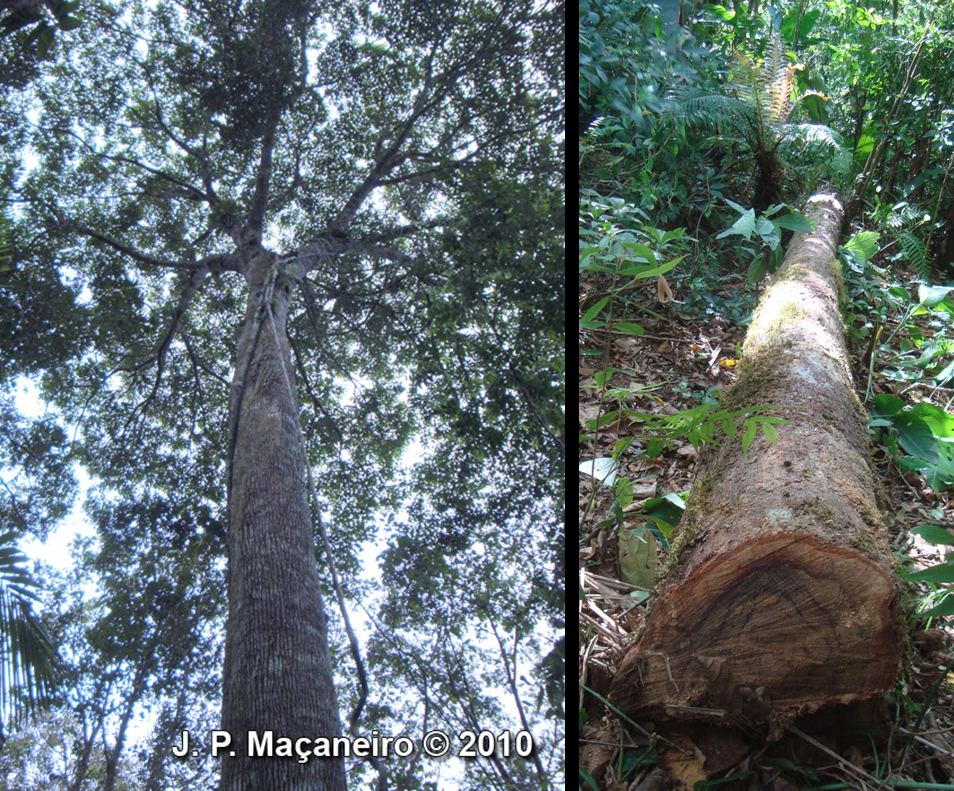
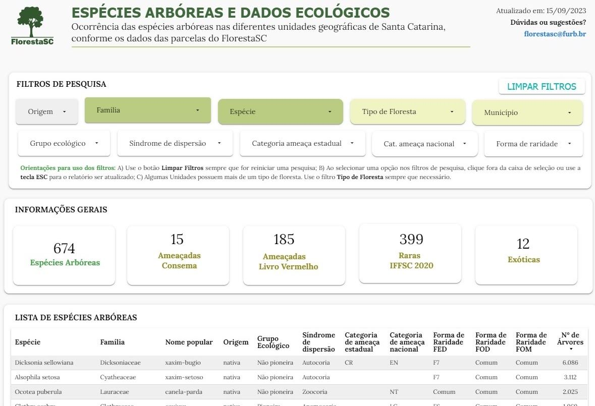

Translated from the Portuguese original. Publication titles, citations and names are kept in their original language.
➤ List of tree species found
➤ Sample plot summaries (Resumo das Unidades Amostrais)
➤ Forest attribute estimates (Estimativas de atributos florestais)
➤ Volume, biomass and necromass models
➤ Wood density database (Banco de dados de densidade da madeira)
➤ Access to the SINFLOR database
Species list
List of species found in the tree layer of the forests assessed by FlorestaSC.
The list gives information such as threat status (Red Book and CONSEMA), ecological group*, rarity types (IFFSC, 2017 – Vol. 7) and more. It also shows the phytoecological regions and river basins where each species was found.
*Ecological groups were defined from the literature (Flora Ilustrada Catarinense, Projeto Madeira de SC, etc.) and reviewed by FlorestaSC specialists.
NOTE: The data by municipality include plot data only (not herbarium data) and cover 449 sample plots in 205 municipalities. As the aim is a state-wide analysis, not every municipality has plots. Some have none because they are small, have no forest left, or for other reasons.
Na dúvida entre em contato: florestasc@furb.br
Specimens of trees, epiphytes, ferns and herbs collected by FlorestaSC are deposited in the FURB Herbarium.
Data on the species and collection sites are available on online platforms such as:
Sample plot summaries
The sample plot summaries are organised in folders by phytoecological region. They can also be accessed through the links in the file lista_parcelas_comLink, which also gives other plot information such as phytoecological region, municipality and river basin.
Location map of the sample plots.
Forest attribute estimates
The mean stocks for each forest type in Santa Catarina shown below were estimated per 'sample point', i.e. considering all land uses within the plots. The estimates are based on data from FlorestaSC measurement Cycle 1.
More information on how the estimates were produced can be found in this scientific note.
Mean stocks per hectare (± 95% confidence interval) and for the total forest area of each forest type in Santa Catarina, considering trees with DBH* ≥ 10 cm.
*DBH = diameter at breast height, measured 1.30 m above the ground.
Allometric models
Allometric models currently used by FlorestaSC to predict total height, stem volume and aboveground biomass per sample plot


Allometric models for volume and biomass prediction developed by FlorestaSC

Model to predict the total volume of trees in the Dense Ombrophilous Forest, built from trees sampled in a secondary forest in Guaramirim (SC).
This Excel spreadsheet is set up to predict total volume using the FlorestaSC model.
Generic and species-specific models to predict the total biomass of trees in the Dense Ombrophilous Forest, built from trees sampled in a secondary forest in Guaramirim (SC).

Generic and species-specific models to predict the total biomass of tree-like species in Santa Catarina.
Wood density
Basic wood density (or basic specific gravity) is the ratio between the dry mass of wood and its saturated (green) volume. It is important for estimating forest biomass and in studies of functional ecology, wood technology and other fields.
In 2014 FlorestaSC began collecting samples to measure the basic wood density of native species in an area of Dense Ombrophilous Forest in Guaramirim (SC). To expand the database, new wood samples have been collected during the FlorestaSC 2nd measurement cycle and on private properties. So far, including the Guaramirim samples, FlorestaSC has basic wood density (kg/m³) for 153 tree species: 86 sampled in the Dense Ombrophilous Forest, 46 in the Mixed Ombrophilous Forest and 42 in the Seasonal Deciduous Forest. The database includes the species with the largest basal area in these forest types, such as Alchornea triplinervia (tanheiro), Hieronyma alchorneoides (licurana), Miconia cinnamomifolia (jacatirão), Lithraea brasiliensis (bugre), Mimosa scabrella (bracatinga), Cupania vernalis (camboatá-vermelho) and Luehea divaricata (açoita-cavalo), among others.
The publication below describes in detail how the database was built and includes spreadsheets with the wood density data (download the supplementary materials).
Publication:
Oliveira, L.Z.; Uller, H.F.; Klitzke, A.R; Eleotério, J.R; Vibrans, A.C. Towards the fulfillment of a knowledge gap: Wood densities for species of the subtropical Atlantic Forest. Data, v. 4, p. 104, 2019.
The supplementary materials also provide basic wood density (kg/m³) for 719 tree species observed by FlorestaSC. For species not sampled, values were derived from the data for the 153 species and the Global Wood Density database (see the publication for details). Another spreadsheet gives the mean basic wood density for 477 FlorestaSC sample plots.
Please note that the database will be updated as the wood density of other species is determined.
Forest types of Santa Catarina and sampling sites for basic wood density.


Log assortments (app)
Intensive logging of the native forests of southern Brazil depleted stocks of high-value timber such as canela-preta, imbuia and grápia. Legal restrictions and later socio-economic changes led to the expansion of secondary forests. Besides their ecological importance, secondary forests have promising productive potential, with fast-growing species and good-quality wood.

Managed secondary Dense Ombrophilous Forest in Guaramirim/SC. Photo: Heitor F. Uller.
In this context, FlorestaSC developed a web app to predict log assortments in secondary forests, to support sustainable management of secondary forests in the region. (Web app for predicting log assortments in secondary forests)
The app counts the number and volume of logs by size class (different lengths and minimum diameters) that can be obtained from a stem of species occurring in three forest types: Dense Ombrophilous Forest, Mixed Ombrophilous Forest and Seasonal Deciduous Forest.
Log assortments can be predicted for species such as Miconia cinnamomifolia (jacatirão), Hieronyma alchorneoides (licurana) and Mimosa scabrella (bracatinga), notable for their fast growth and good-quality wood.

Management of Hieronyma alchorneoides (licurana) in a secondary forest in Guaramirim/SC, and a log of the species being sawn. Photos: Alfredo C. Fantini and Heitor F. Uller.
The app was developed in R (shiny package) and uses taper models built by FlorestaSC from a dataset collected across Santa Catarina, covering about 2,000 stems and 300 tree species.
The app has 10 fields where users select an option or enter information. How to use each field is explained in this TUTORIAL.
How to cite
Oliveira, L.Z.; Vibrans, A.C. A web tool for predicting log assortments in secondary Atlantic forests using regional taper models. Scientia Agricola v. 83, e20250137, 2026.

Miconia cinnamomifolia (jacatirão).
SUGESTÃO DE LEITURA:
Fantini, A.C.; Siminski, A.; Gaio, M.F. Madeira de florestas secundárias em SC: Nova fonte de renda para os agricultores. Agropecuária Catarinense, v. 29, n. 2, p. 15–18, 2016.

SINFLOR database
SINFLOR
FlorestaSC Data Management System Learn more →

The FlorestaSC Data Management System – SINFLOR – was developed to store all data collected in FlorestaSC sample plots and to produce a range of estimates, returned to users as reports.
Registered SINFLOR users have full access to data and reports. Unregistered users are limited to information defined as public (basic reports, maps and information on the species found):
Reports: *Format: online report or file (.csv)
Sinflor provides data reports for the 1st cycle (2007-2010) and the
2nd measurement cycle (2014-2019).
The system lets users...
- Filter data by vegetation type, successional stage, river basin, micro-region, meso-region, municipality or protected area;
- Compute data based on the total plot area ('Surveyed area') or only the area actually covered by forest within the plot ('Forested area');
- Choose whether to include dead trees in the calculations ('with dead trees' or 'without dead trees', i.e. live trees only);
- View data as a 'Report' (pop-up) or download them as a 'File', i.e. an Excel spreadsheet (.csv), by clicking 'download';
- For some reports, extra fields can be added (box 'Fields to display').
Available reports:
Horizontal structure: phytosociological table of species (number of individuals, basal area, density, dominance, frequency, importance value, cover value, and maximum, mean and minimum DBH and height (stem and total)).
Diameter structure: number of individuals, basal area, density and dominance by class, plot, plot-class, species-plot and species-class.
Vertical structure – sociological position: estimates species importance based on their share in the vertical strata. Number of individuals by height class and species (tree layer). Absolute (PSA) and relative (PSR) sociological position. Natural regeneration: number of individuals by height class and species (regeneration layer). Absolute size class (CAT), relative size class (CRT), relative natural regeneration (RNR) and VIA: extended importance value. (Extended importance value)
Floristics: occurrence of species and plant families in the sample plots (tree, regeneration and floristic components).
Diversity: species richness and Shannon-Weaver (H'), Simpson (C) and Pielou (J) indices per sample plot.
Data matrix: returns occurrence matrices (binary presence 1/absence 0) or quantitative matrices (number of individuals, basal area, density/dominance) of species per sample plot (trees with DBH ≥ 10 cm).
Estimates: produces population estimates (means and confidence intervals) for density (trees/ha), diameter (cm), height (m), basal area (m²/ha), stem volume (m³/ha), dry weight (Mg/ha), carbon (Mg/ha) and species richness.
Explainer videos
FlorestaSC holds a vast amount of information on the forests of Santa Catarina. To make it accessible to the public, FlorestaSC uses online resources and has developed products and tools to share its data.
To help the public use FlorestaSC's data tools, this section presents a series of explainer videos. They cover, for example, phytosociological indices and indicators, using Sinflor to compute phytosociological parameters by forest type and geographic boundary (municipalities and others), looking up floristic information on online platforms, obtaining FlorestaSC land-use mapping data, and an overview of our website and the FlorestaSC books.
Subscribe to our YouTube channel.
Video: The FlorestaSC portal
This video explores the FlorestaSC portal and shows users how to find the information and products generated by FlorestaSC.
Main topics covered in this video:
- Overview of the FlorestaSC portal
- Access to the results of measurement Cycles 1 and 2
- Access to FlorestaSC products (species list, plot summaries, estimates, database, publications and more)
- Forest cover mapping of Santa Catarina
Video: Platforms for flora and botanical collection data
This video explains how to use four important online platforms for information on plant species and botanical collections, including FlorestaSC records.
Target audience: protected area managers
Platforms presented:
Video: FlorestaSC map platform and file downloads
In this video you will learn about the MapeiaSC project and its data and map platform, and how to register on the platform and download shapefiles and other file types.
- Forest cover mapping of Santa Catarina and access to the FlorestaSC map platform
- Platform content: layers, documents and maps
- Downloading shapefiles and raster files
Video: Generating calculation reports in Sinflor
This video shows users how to use Sinflor to generate species lists and reports of estimates and phytosociological indices from the FlorestaSC dataset.
- The Sinflor database
- Basic report filters and some concepts, such as surveyed area vs. forested area and grid plots vs. complementary plots
- Sinflor public reports: specific filters and examples
Video: How does FlorestaSC estimate forest attributes?
This video shows how forest attribute estimates are produced from FlorestaSC data.
Main topics covered:
- Concepts of population, sampling and statistical inference
- FlorestaSC sampling
- FlorestaSC forest attribute estimates
- Generating forest attribute estimates in SINFLOR (Forest Inventory System)
Video: What is biological diversity?
- Diversity-related concepts
- Diversity indices
- Insights on diversity and environmental management
- Generating diversity estimates in SINFLOR (Forest Inventory System)
Video: Tree mortality
- Natural and human causes of tree mortality
- Monitoring mortality
- Spatial distribution of mortality in Santa Catarina
- Main families affected by mortality
Interactive dashboards
The interactive data dashboards allow quick searches on the sample plots and tree species assessed by FlorestaSC, using search filters.
The dashboards can answer questions such as:
- Which tree species did FlorestaSC find in a given municipality?
- In which municipalities did FlorestaSC find a given species?
- Which threatened species did FlorestaSC assess, and where were they found?
- Which protected areas did FlorestaSC visit, and which species were found there?
Available dashboards:
- Tree species and ecological data
- Tree species by geographic unit
- Tree species in protected areas
CLICK HERE to open our data dashboards: (CLIQUE AQUI)

Page migrated from floresta.sc.gov.br.